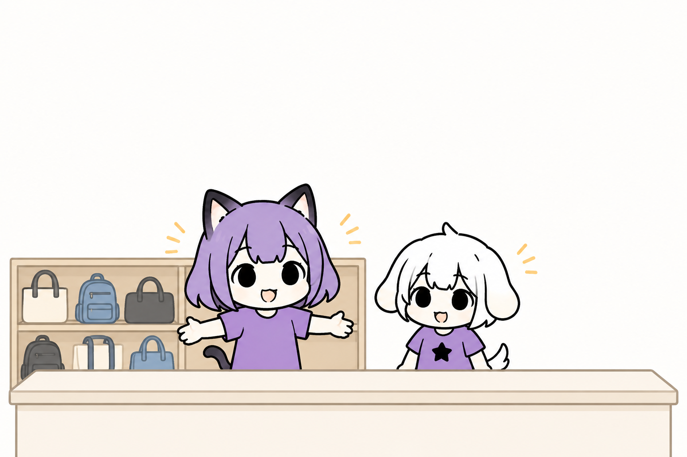
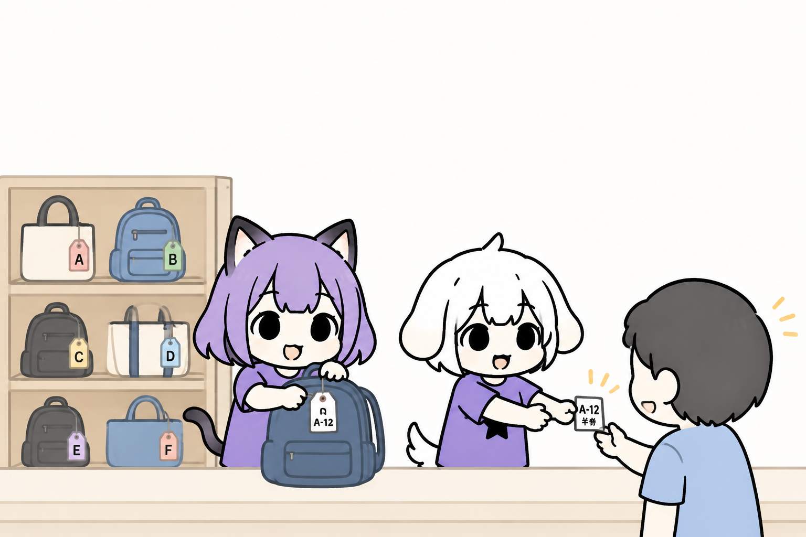
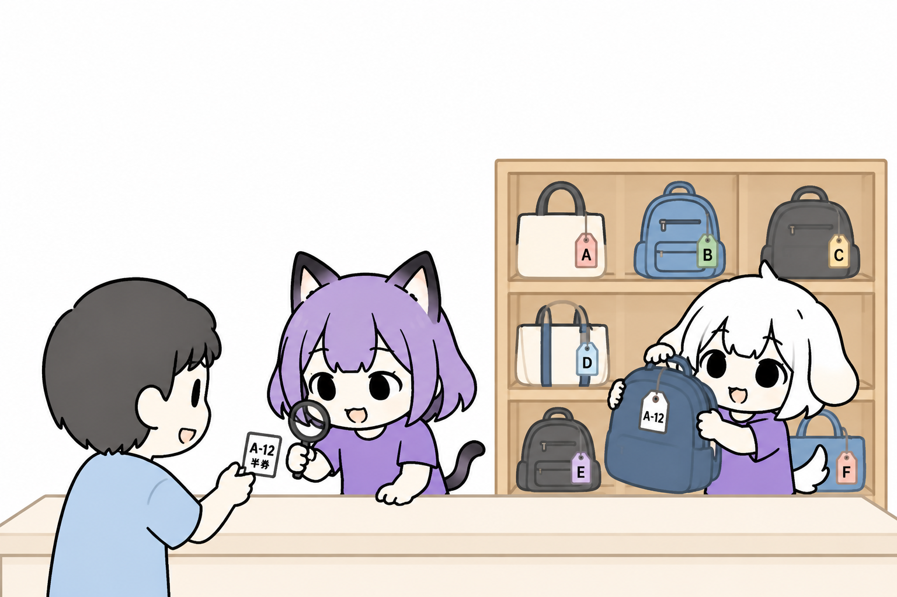
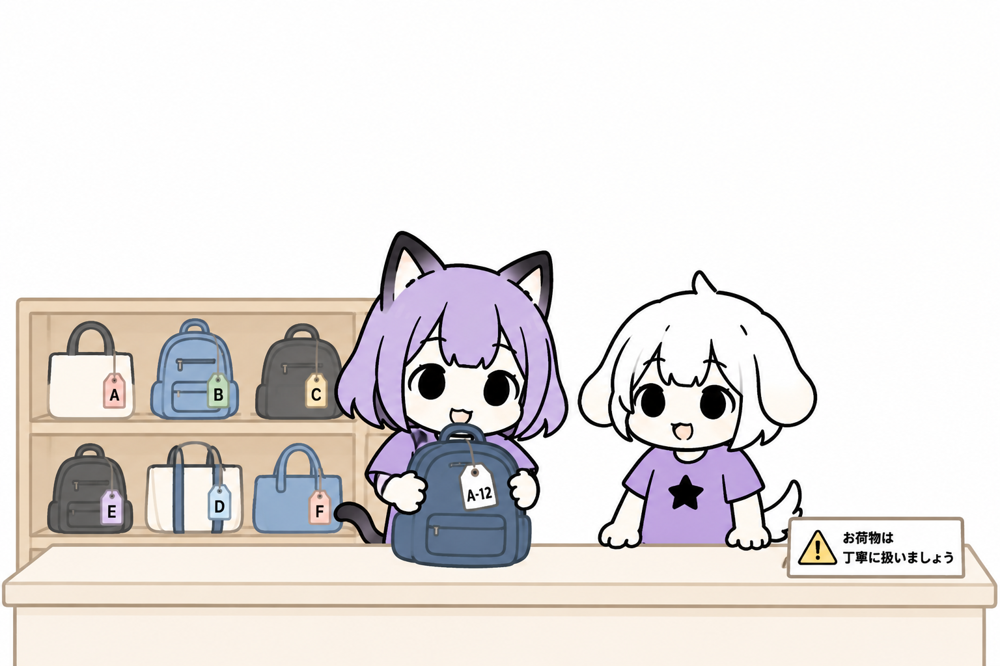

🧳 クロークってなにするの？
ボランティアさんの荷物の預かりと引き出しをするお仕事です！
取り違えや、紛失、盗難がないように荷物管理をしましょう。
Tokyo Pride ボランティア統括セクション

ボランティアさんの荷物の預かりと引き出しをするお仕事です！
取り違えや、紛失、盗難がないように荷物管理をしましょう。

１つ１つの荷物は「タグ」で管理します。
預かる荷物に「タグ」をつけて、「タグ」の半券を荷主に渡し、荷物はクローク棚に収納します。
「タグ」の色に合わせて収納するエリアを大まかに分けていて、そのエリアに「タグ」の番号順に収納していきます。
⚠️ 貴重品は預かれません。必ず身につけてもらうようにしてください。
⚠️ 「タグ」の半券を無くす方が多いので、その場ですぐに写真撮影するようにおすすめしてください。

「タグ」の半券を見せてもらい、「タグ」の色と番号から対応する荷物を見つけ、荷主に渡します。
⚠️ 万が一半券をなくした方がいた場合、取り違えや盗難のリスクがありますので、荷物の特徴を詳しく聞いて間違いないことを確認するか、対応をスタッフに相談してください。

荷物は丁寧に扱いましょう。
クロークエリアには、最低2人以上が常駐しているようにしてください。